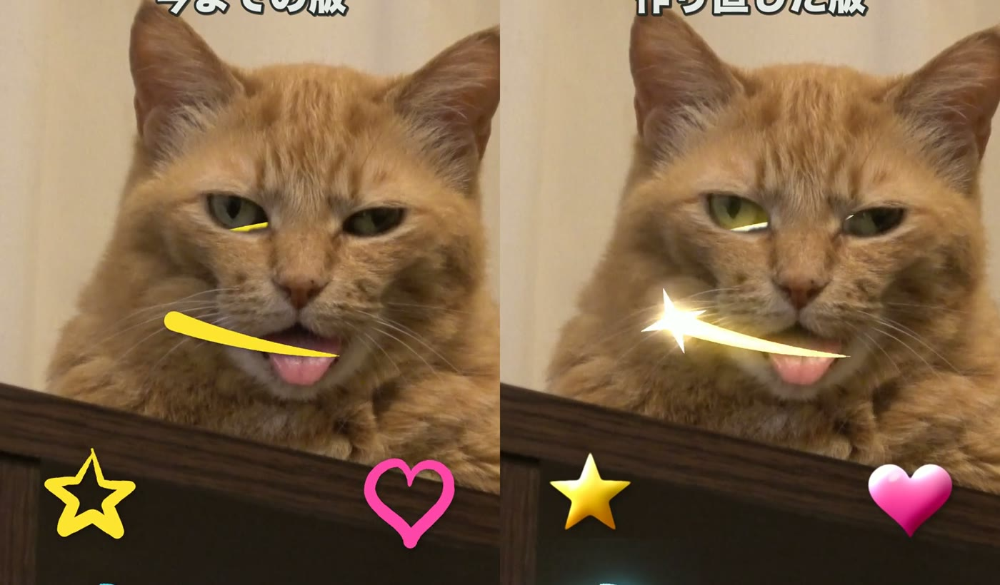

16 歳のごまくんと、以前一緒に暮らしていたゆきちゃんの動画です。映像はすべて自分で撮った本物で、編集を Claude Code に頼んでいます。動画編集ソフトは使っていません。私がやるのは、作りたい動画を言葉で伝えることと、できたものを見て、直すところを伝えることです。
ごまくんとゆきちゃん いつも近くにいた二匹の思い出（4 分 45 秒）。36 の場面を、曲の拍に合わせて並べています。
同じ素材から作った縦のショート（80 秒）。スマホの画面で下と右に重なる表示を調べて、文字は上の帯に置いています。

演出の見た目を直す前（左）と後（右）。最初の見た目を安っぽいと感じたので、そう伝えて作り直してもらいました。
私がやること
- 作りたい動画を言葉で伝えます。今回は、二匹の動画で 5 分ぐらいの動画を、曲は誰もが知っているクラシックで、と頼みました
- できた動画を再生しながら、気づいたことを声で伝えます。長い版の直しは 2 か所でした
- 見た目や言い回しの好みを伝えます。一度伝えた好みは、次の動画から最初に反映されます
AI がやること
- 外付けのディスクにある 100 本以上の動画の中身を見て、使う場面を選びます
- 曲の拍に合わせて場面を並べ、テロップを書きます。猫の心の声は、猫ごとに色と書体を分けています
- 線が体のまわりを回る、星やハートがはじける、といった演出は、その動きを描くプログラムを書いて映像に重ねています。猫の形を切り抜いて、線が体の後ろを通るときは隠れるようにしています
- 伝えた好みを手順書に書き溜め、次の動画を作る前に読み直します
- 書き出した動画を自分でコマ単位に確かめ、YouTube へのアップロードまで行います
※ 絵や映像を AI に生成させているのではなく、本物の映像の編集を AI に頼んでいます。どの場面を選ぶか、何を面白いと思うかは、見て判断して伝えています。
動画編集Claude CodeYouTubeショート動画